AWS, Google Cloud, Microsoft Foundry를 통해 Claude Desktop을 사용하는 조직은 이제 채팅(chat), Claude Cowork, Claude Code까지 — 완전한 Desktop 경험 전부를 하나의 앱에서 누릴 수 있습니다.
이제 IT 팀은 여러 제품에 걸쳐 추론(inference)을 자체 환경 안에 유지하면서, 사용자별 SSO, MDM 정책 템플릿, 오프라인 설치 관리자(offline installer) 옵션, 그리고 기기 안에서 완전히 동작할 수 있는 M365 커넥터와 함께 Claude Desktop을 조직 전체에 배포할 수 있습니다.
추론은 여러분이 구성한 리전(region)에서, 여러분의 클라우드 위에서 실행되며, 대화 기록은 로컬에 저장됩니다. 데이터 커넥터가 접근하는 엔드포인트와 Anthropic이 수신하는 집계 텔레메트리(aggregated telemetry)를 여러분이 제어합니다.
오늘 이전까지는 AWS, Google Cloud, Microsoft Foundry를 통해 Claude Desktop을 사용하는 고객은 Claude Cowork와 Claude Code에만 접근할 수 있었습니다. 이제 하나의 배포가 모든 역할을 커버하며, 각 인터페이스(surface)마다 고유한 정책 키(policy key)가 있어 누구에게 무엇을, 언제 제공할지 여러분이 결정합니다.
빠른 답변을 얻고 문제를 차근차근 생각할 때는 채팅(Chat). 사람들이 차라리 맡겨버리고 싶어 하는 일에는 Claude Cowork — Claude가 승인된 출처들을 가로질러 조사하고, 기기에 이미 있는 파일을 다루며 결과물을 만들어, 완료되면 결과를 보여줍니다. 터미널에 파묻혀 살지 않으면서도 에이전트형 코딩(agentic coding)을 원하는 엔지니어에게는 Claude Code.
Claude Desktop을 조직 전체에 배포한다는 것은, 이미 보유하고 있는 시스템 안에서 작업한다는 뜻입니다.
다른 업무용 앱처럼 로그인합니다. 직원은 다른 모든 곳에서 쓰는 것과 동일한 업무 계정을 사용합니다: IAM Identity Center, Workforce Identity Federation, Microsoft Entra ID, 또는 Okta 같은 모든 OIDC 공급자. 교체해야 할 공유 키도, 최종 사용자 기기에 놓이는 클라우드 자격 증명도 없습니다.
이미 관리하고 있는 앱처럼 배포합니다. 설정 UI에서 정책 템플릿을 내보내 Intune, GPO, Jamf를 통해 푸시하세요. 오프라인 설치 관리자는 에어갭(air-gapped) 환경까지 커버합니다.
누구에게 보이기 전에 정상 작동을 확인합니다. 모든 커넥터를 테스트하고, 여러분의 공급자가 어떤 Claude 모델을 제공하는지 확인하고, 연결을 검증하세요 — 전부 롤아웃 전에 말입니다. 모델 가드(model guard)는 설정이 잘못 구성되더라도, GovCloud를 포함해 라우팅이 Claude에 머물도록 유지합니다.
작게 시작해 도입이 늘면 확장합니다. 채팅, Claude Cowork, Claude Code는 각각 고유한 정책 키를 가지므로, 비기술 팀에는 채팅과 Claude Cowork를, 엔지니어링 팀에는 Claude Code를 부여한 뒤, 각 팀이 인터페이스를 도입해 감에 따라 접근 권한을 넓힐 수 있습니다. 여러분의 강제 거부(hard-deny) 규칙은 모든 탭에 걸쳐 적용됩니다.
업무가 있는 곳으로 Claude를 가져옵니다. Microsoft 365 커넥터는 여러분 자체의 Entra 앱을 통해 Claude가 메일과 문서에 접근하도록 해주며, 테넌트 허용 목록(tenant allowlisting)과 GCC High/DoD 엔드포인트에 대한 베타 지원을 제공합니다. 가장 엄격한 데이터 거주(residency) 요구사항에는 로컬 커넥터를 사용하면, 연결이 기기와 Microsoft 사이에만 머뭅니다.
"우리는 기존 클라우드 환경을 통해 Claude Desktop을 빠르게 롤아웃했습니다 — 별도의 벤더 계약 없이 말이죠. 우리 자체 LLM Gateway 덕분에 한 팀이 무거운 인프라 구축 없이도 전 세계 수백 명의 사용자에게 배포할 수 있었습니다." — Sarang Oh, 한화솔루션 Analytics/AI 팀 리더
관리자라면, 배포 가이드가 SSO, 정책 템플릿, 롤아웃 전 검증 과정을 안내합니다. 또는 담당 어카운트 팀에 문의하시면 롤아웃 계획을 도와드리겠습니다.